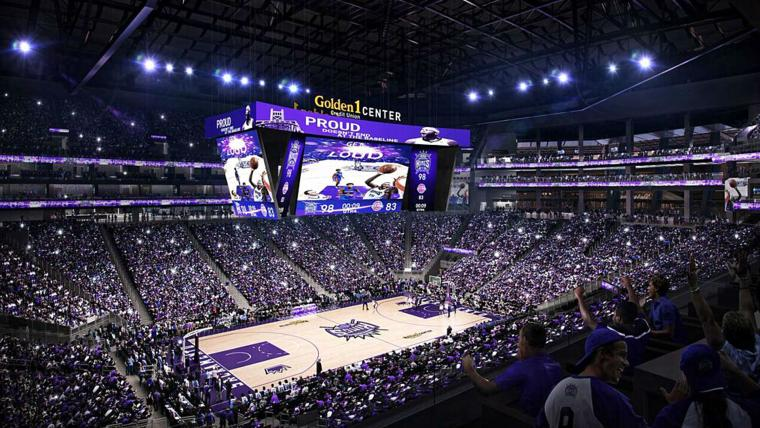

Sacramento Kings - A equipe foi fundada em 1923, originalmente como Rochester Seagrams e, depois de várias mudanças, chegou a Sacramento em 1985. Embora a equipe não tenha conquistado um título da NBA, os Kings têm uma rica história, com destaque para sua época dourada nos anos 2000, quando contaram com estrelas como Chris Webber e Vlade Divac. Nos últimos anos, com jogadores como De'Aaron Fox e Domantas Sabonis, os Kings têm buscado retomar a competitividade e buscar títulos.
Elenco - De'Aaron Fox (#5), Domantas Sabonis (#10), Keegan Murray (#13), Kevin Huerter (#9), Malik Monk (#0), Alex Len (#25), Trey Lyles (#41), Doug McDermott (#17).
Títulos NBA - Nenhum
Títulos Conferência - 1 (1951)
Estádio - Golden 1 Center (17.600)
